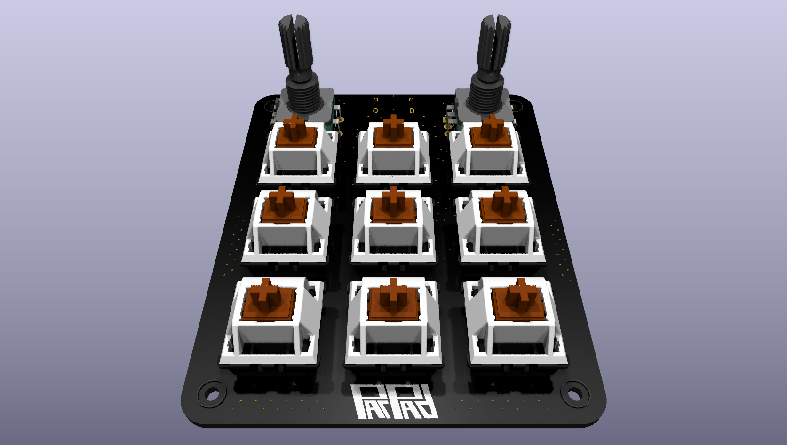

Projects
A showcase of my personal and academic projects in embedded systems, firmware development, and hardware design.
Featured Projects

STM32-Based Macropad
3x3 macropad with two rotary encoders, built using an STM32 microcontroller. PCB designed in KiCad, runs custom QMK-based firmware written in C allowing for fully programmable keys and custom macros.
June 2025